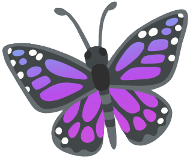

jButterFly MLM Mission Control
jFindMe Enterprise Matrix
Live GPS Telemetry & Cloud Sentinel Radar
Telemetry Heartbeat Carrier
♥
76
BPM · LIVE
⚡
[PULSE 1/3] Booting Daemon Core...
0%
Pulse 1: Core
Pulse 2: Cloud
Pulse 3: Fleet
> [PULSE 1/3] Waking background daemon on port 3000...